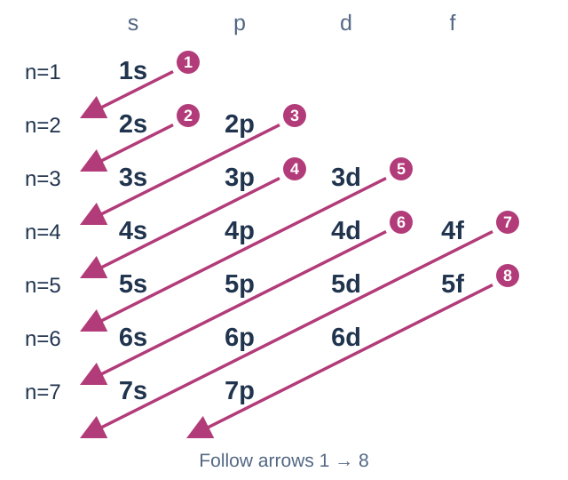
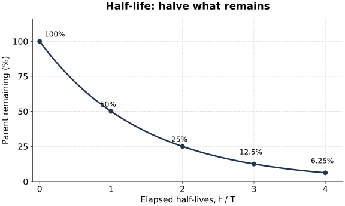

ช่วงที่พร้อม: ข้อ 1–3 · อ่านหลัก ดูตัวอย่าง แล้วลองคำถามทวนก่อนกลับไปทำข้อสอบ ตัวอย่างและคำถามในหน้านี้ใช้ข้อมูลต่างจากข้อสอบ
ข้อ 1 — อ่านการจัดเรียงและนับเฉพาะชั้นย่อยที่ถาม
ต้องแยกให้ได้: เลขหน้าตัวอักษรบอกระดับพลังงานหลัก ตัวอักษร s, p, d, f บอกชนิดชั้นย่อย ส่วนเลขยกกำลังบอกจำนวนอิเล็กตรอนที่มีอยู่จริง เช่น \(3p^4\) อยู่ชั้นหลัก 3 เป็นชั้นย่อย p และมีอิเล็กตรอน 4 ตัว
| ชั้นย่อย | จำนวนออร์บิทัล | อิเล็กตรอนสูงสุด |
|---|---|---|
| s | 1 | 2 |
| p | 3 | 6 |
| d | 5 | 10 |
| f | 7 | 14 |
หนึ่งออร์บิทัลมีอิเล็กตรอนได้สูงสุด 2 ตัว ความจุสูงสุดกับจำนวนที่บรรจุอยู่จริงเป็นคนละค่า ชั้นย่อยที่ยังไม่ถูกเติมให้นับเป็นศูนย์
คำถาม 1 — อ่านสัญลักษณ์ให้ครบ
ก. ใน \(4p^3\) เลข 4 ตัว p และเลข 3 หมายถึงอะไร?
ข. \(3d^7\) มีอิเล็กตรอนอยู่จริงกี่ตัว และชั้นย่อย d จุได้สูงสุดกี่ตัว?
ก. 4 คือชั้นหลัก p คือชนิดชั้นย่อย และ 3 คือจำนวนอิเล็กตรอนที่อยู่ในชั้นย่อยนี้
ข. มีอยู่จริง 7 ตัว แต่จุสูงสุดได้ 10 ตัว เลข 7 บอกการบรรจุ ไม่ใช่ความจุสูงสุด
เขียนก่อน แล้ววงเฉพาะชั้นย่อยที่ต้องนับ
อะตอมเป็นกลางมีจำนวนอิเล็กตรอนเท่ากับเลขอะตอม Z เติมตามลำดับสถานะพื้น แล้วรวมเลขยกกำลังเพื่อตรวจยอด ใช้การจัดเรียงจริงของธาตุที่มีข้อยกเว้น แผนผังต่อไปนี้เป็นตัวช่วยจำลำดับทั่วไป

ตัวอย่างต่างโจทย์: S มี Z = 16 จัดได้เป็น \(1s^2\,2s^2\,2p^6\,3s^2\,3p^4\) หรือ \([\mathrm{Ne}]\,3s^2\,3p^4\) โดย [Ne] แทนอิเล็กตรอน 10 ตัว ถ้าต้องการผลรวมเฉพาะ 3s, 3p และ 3d ให้แยกดังนี้
| ชั้นย่อยที่ถาม | จำนวนที่มีอยู่จริง |
|---|---|
| 3s | 2 |
| 3p | 4 |
| 3d | 0 |
| รวม | 2 + 4 + 0 = 6 |
แกน [Ne] ย่อมาจาก \(1s^2\,2s^2\,2p^6\) ถ้าโจทย์ถามชั้นย่อยในแกน ต้องนำส่วนนั้นกลับมานับด้วย แต่ไม่รวมชั้นย่อยอื่นที่โจทย์ไม่ได้ถาม
คำถาม 2 — ลองเปลี่ยนชั้นย่อยที่ต้องนับ
ก. Al มีการจัดเรียง \([\mathrm{Ne}]\,3s^2\,3p^1\) จงหาจำนวนใน 2p, 3p, 3d และผลรวมเฉพาะสามชั้นย่อยนี้
ข. จากการจัดเรียงของ Al ข้างต้น จำนวนอิเล็กตรอนในชั้นหลัก 3 กับในชั้นย่อย 3p เท่ากันหรือไม่?
ค. Ca เป็นอะตอมเป็นกลาง มี Z = 20 จงเขียนการจัดเรียงแบบย่อ แล้วหาผลรวมเฉพาะ 3d, 4s และ 4p
ก. 2p มี 6 ตัวจากแกน [Ne], 3p มี 1 ตัว และ 3d ยังไม่มี จึงรวม 6 + 1 + 0 = 7 ตัว
ข. ไม่เท่ากัน ชั้นหลัก 3 รวม 3s กับ 3p ได้ 2 + 1 = 3 ตัว ส่วน 3p มีเพียง 1 ตัว
ค. Ca: \([\mathrm{Ar}]\,4s^2\) ดังนั้น 3d = 0, 4s = 2, 4p = 0 รวม 2 ตัว ตรวจยอดทั้งหมดได้ 18 + 2 = 20
อ่านต่อ: บทอะตอมและสมบัติของธาตุ → การจัดเรียงอิเล็กตรอน · สสวท. Project 14: หลักการจัดเรียง
ข้อ 2 — แยกชื่อหมู่ แนวโน้ม ขนาดไอออน และ IE
โจทย์ตรวจข้อความหลายเรื่องให้แยกตรวจทีละหลักก่อน คำว่า “มากกว่า” ต้องถามต่อว่าเทียบธาตุเดียวกันหรือคนละธาตุ และคำว่า “เสมอ” ต้องมีเงื่อนไขรองรับ
ชื่อหมู่กับข้อยกเว้น
| ตำแหน่ง | ชื่อและตัวอย่าง |
|---|---|
| โลหะหมู่ 1 | โลหะแอลคาไล เช่น Li, Na, K |
| หมู่ 2 | โลหะแอลคาไลน์เอิร์ท เช่น Be, Mg, Ca |
| H | อยู่หมู่ 1 แต่เป็นอโลหะ จึงไม่จัดเป็นโลหะแอลคาไล |
คำถาม 3 — ชื่อกลุ่มบอกอะไร
ก. กำหนด Rb อยู่หมู่ 1 และ Sr อยู่หมู่ 2 โลหะทั้งสองอยู่ในกลุ่มชื่อใดตามลำดับ?
ข. เหตุใดการเห็นธาตุอยู่หมู่ 1 เพียงอย่างเดียวจึงยังใช้เรียกทุกธาตุในหมู่ว่าโลหะแอลคาไลไม่ได้?
ก. Rb เป็นโลหะแอลคาไล ส่วน Sr เป็นโลหะแอลคาไลน์เอิร์ท
ข. ต้องแยก H ซึ่งเป็นอโลหะออกจากโลหะหมู่ 1 ตำแหน่งในตารางกับชื่อกลุ่มโลหะจึงมีเงื่อนไขต่างกัน
เปรียบเทียบขนาดและ EN พร้อมเหตุผล
| สิ่งที่เปรียบเทียบ | แนวโน้มพื้นฐานของธาตุหมู่หลัก | เหตุผลที่ใช้ |
|---|---|---|
| ซ้ายไปขวาในคาบเดียวกัน | รัศมีอะตอมโดยทั่วไปลดลง | จำนวนโปรตอนเพิ่ม ขณะที่อิเล็กตรอนชั้นนอกยังอยู่ชั้นหลักเดียวกัน แรงดึงที่มีผลจึงเพิ่ม |
| บนลงล่างในหมู่เดียวกัน | รัศมีโดยทั่วไปเพิ่ม และ EN โดยทั่วไปลด | เพิ่มชั้นอิเล็กตรอน ระยะและการกำบังเพิ่ม |
| ไอออนเทียบกับอะตอมของธาตุเดียวกัน | ไอออนบวกเล็กลง ไอออนลบใหญ่ขึ้นตามแบบจำลองพื้นฐาน | จำนวนอิเล็กตรอนและแรงผลักเปลี่ยน ขณะที่จำนวนโปรตอนคงเดิม |
EN คือความสามารถดึงอิเล็กตรอนที่ใช้ร่วมกันในพันธะเข้าหาตน แนวโน้มข้างต้นใช้เป็นภาพรวม ต้องอ่านชนิดอนุภาคและเงื่อนไขของคู่ที่เปรียบเทียบด้วย
คำถาม 4 — ระบุคู่เปรียบเทียบก่อนใช้ลูกศร
ก. K กับ Ca อยู่คาบ 4 เหมือนกัน อะตอมใดมีรัศมีมากกว่าโดยทั่วไป เพราะอะไร?
ข. O กับ S อยู่หมู่ 16 เหมือนกัน อะตอมใดใหญ่กว่า และธาตุใดมี EN สูงกว่า?
ค. เทียบ \(\mathrm{Mg^{2+}}\) กับ Mg และ \(\mathrm{F^-}\) กับ F ไอออนใดเล็กลงหรือใหญ่ขึ้นจากอะตอมเดิม?
ก. K ใหญ่กว่า Ca โดยทั่วไป ในคาบเดียวกันแรงดึงที่มีผลเพิ่มจาก K ไป Ca จึงดึงอิเล็กตรอนให้ใกล้ขึ้น
ข. S ใหญ่กว่าเพราะมีชั้นหลักเพิ่ม ส่วน O มี EN สูงกว่า เพราะอยู่ด้านบนของหมู่
ค. Mg²⁺ เล็กกว่า Mg ส่วน F⁻ ใหญ่กว่า F การเสียกับรับอิเล็กตรอนให้ผลต่อขนาดต่างกัน
IE แต่ละลำดับเริ่มจากอนุภาคต่างกัน
พลังงานไอออไนเซชันคือพลังงานที่ใช้ดึงอิเล็กตรอนออกจากอะตอมหรือไอออนในสถานะแก๊ส สำหรับธาตุเดียวกัน ลำดับถัดไปใช้พลังงานมากขึ้น เพราะกำลังดึงออกจากไอออนบวกที่ยึดอิเล็กตรอนที่เหลือแน่นขึ้น ต้องมีอิเล็กตรอนเหลือให้ดึงในลำดับนั้นด้วย
| ลำดับ | สมการแสดงการดึงออกหนึ่งตัว |
|---|---|
| \(IE_1\) | \(\mathrm{M(g)\rightarrow M^+(g)+e^-}\) |
| \(IE_2\) | \(\mathrm{M^+(g)\rightarrow M^{2+}(g)+e^-}\) |
ตัวอย่างข้อมูลสมมติ: ถ้า \(IE_1=400\) และ \(IE_2=2200\,\mathrm{kJ\,mol^{-1}}\) การเปลี่ยน M(g) เป็น M²⁺(g) ต้องรวมสองขั้น จึงใช้ 400 + 2200 = 2600 kJ ต่ออะตอม M 1 mol ส่วนการเริ่มจาก M⁺(g) แล้วดึงอีกหนึ่งตัวใช้เพียง IE₂
คำถาม 5 — อ่านอนุภาคตั้งต้นของแต่ละขั้น
ก. \(\mathrm{Ca^+(g)\rightarrow Ca^{2+}(g)+e^-}\) ใช้ IE ลำดับใด?
ข. ถ้าเริ่มจาก Ca(g) แล้วต้องการ Ca²⁺(g) ต้องใช้ IE₂ อย่างเดียว หรือรวมพลังงานใดบ้าง?
ค. H⁺ ยังมีอิเล็กตรอนเหลือให้ดึงหรือไม่ จึงนิยาม IE₂ ของอะตอม H ด้วยขั้นตอนเดียวกันนี้ได้หรือไม่?
ก. IE₂ เพราะเริ่มจากไอออนประจุ +1 แล้วดึงอิเล็กตรอนออกอีกหนึ่งตัว
ข. รวม IE₁ + IE₂ เพราะต้องดึงออกสองตัวจากอะตอมเป็นกลาง การดูเฉพาะประจุสุดท้ายยังไม่บอกพลังงานทั้งหมด
ค. H⁺ ไม่มีอิเล็กตรอน จึงไม่มีการดึงอิเล็กตรอนตัวที่สองตามนิยามนี้ ต้องตรวจว่าลำดับที่กล่าวถึงมีอิเล็กตรอนให้ดึงจริง
อ่านต่อ: บทอะตอมและสมบัติของธาตุ → ตารางธาตุและสมบัติของธาตุหมู่หลัก · สสวท. Project 14: พลังงานไอออไนเซชัน
ข้อ 3 — แยกส่วนที่สลายกับส่วนที่เหลือ แล้วนับครึ่งชีวิต
ครึ่งชีวิต \(T_{1/2}\) คือเวลาที่ปริมาณนิวเคลียสเดิมที่ยังไม่สลายเหลือครึ่งหนึ่งของตอนเริ่มช่วงนั้น ใช้กับตัวอย่างที่มีนิวเคลียสจำนวนมาก และเป็นสมบัติของไอโซโทป ไม่ได้เปลี่ยนเพียงเพราะเริ่มด้วยปริมาณมากหรือน้อย
กำหนด \(N_0\) เป็นจำนวนเริ่มต้น และ \(N\) เป็นจำนวนเดิมที่ยังไม่สลาย: สัดส่วนที่เหลือ คือ \(N/N_0\) ส่วน สัดส่วนที่สลายไป คือ \(1-N/N_0\) ต้องแปลงข้อความให้เป็นสัดส่วนที่เหลือก่อนนับครั้งที่หารสอง
คำถาม 6 — ส่วนที่เหลือกับส่วนที่สลาย
ก. ถ้าสลายไป 3/4 ของปริมาณตั้งต้น เหลือส่วนของนิวเคลียสเดิมเท่าไร?
ข. ถ้ายังเหลือ 40% สลายไปกี่เปอร์เซ็นต์?
ก. เหลือ 1 − 3/4 = 1/4 ของปริมาณตั้งต้น
ข. สลายไป 100% − 40% = 60%
แต่ละช่วงลดครึ่งหนึ่งของส่วนที่ยังเหลือ
| จำนวนครึ่งชีวิต k | สัดส่วนที่เหลือ |
|---|---|
| 0 | 1 |
| 1 | 1/2 |
| 2 | 1/4 |
| 3 | 1/8 |
| 4 | 1/16 |

ความสัมพันธ์ทั่วไปคือ \(N=N_0\left(\frac12\right)^{t/T_{1/2}}\) ถ้าทราบจำนวนครั้งที่หารสองเป็น k แล้ว ใช้ \(t=kT_{1/2}\) โดย t และ \(T_{1/2}\) ต้องใช้หน่วยเวลาเดียวกัน สำหรับมวลของไอโซโทปเดิมที่ยังเหลือ ใช้สัดส่วนเดียวกับจำนวนของมันได้
คำถาม 7 — ติดตามปริมาณทีละช่วง
ก. ไอโซโทป X เริ่ม 64 mg มีครึ่งชีวิต 8 ชั่วโมง หลัง 16 ชั่วโมง เหลือ X กี่ mg และ X เดิมสลายไปกี่ mg?
ข. ปริมาณ X ที่สลายในช่วง 0–8 ชั่วโมง กับ 8–16 ชั่วโมงเท่ากันหรือไม่ แสดงค่าของแต่ละช่วง
ก. 16 ชั่วโมง = 2 ครึ่งชีวิต: 64 → 32 → 16 mg จึงเหลือ 16 mg และสลายไป 64 − 16 = 48 mg
ข. ไม่เท่ากัน ช่วงแรกสลาย 64 − 32 = 32 mg ช่วงถัดมาสลาย 32 − 16 = 16 mg แต่ทั้งสองช่วงลดครึ่งหนึ่งของปริมาณต้นช่วง
ตัวอย่างย้อนหาครึ่งชีวิตด้วยข้อมูลต่างโจทย์
ไอโซโทป Y สลายไป 15/16 ในเวลา 40 ชั่วโมง → เหลือ 1/16 → ต้องหารสอง 4 ครั้ง → \(40=4T_{1/2}\) จึงได้ \(T_{1/2}=10\) ชั่วโมง ตรวจย้อน: 10, 20, 30, 40 ชั่วโมง เหลือ 1/2, 1/4, 1/8, 1/16 ตามลำดับ
คำถาม 8 — ย้อนหาแล้วตรวจกลับ
ก. ไอโซโทป Z สลายไป 3/4 ในเวลา 28 ชั่วโมง จงหาครึ่งชีวิต พร้อมตรวจว่าส่วนที่เหลือตรงเงื่อนไข
ข. ถ้าใช้ไอโซโทป Z ชนิดเดิม แต่เพิ่มปริมาณตั้งต้นเป็นสองเท่า ครึ่งชีวิตต้องเพิ่มเป็นสองเท่าหรือไม่?
ก. เหลือ 1/4 เท่ากับหารสอง 2 ครั้ง จึงได้ \(28=2T_{1/2}\) และ \(T_{1/2}=14\) ชั่วโมง ตรวจที่ 14 และ 28 ชั่วโมง จะเหลือ 1/2 และ 1/4 จึงสลายไป 3/4
ข. ครึ่งชีวิตยังเท่าเดิม ภายใต้เงื่อนไขการสลายเดียวกัน ปริมาณตั้งต้นเพิ่มทำให้ปริมาณที่เหลือแต่ละเวลามากขึ้น แต่เวลาที่ลดเป็นครึ่งหนึ่งไม่เพิ่มตาม
อ่านต่อ: บทอะตอมและสมบัติของธาตุ → ธาตุกัมมันตรังสี → ครึ่งชีวิต · สสวท. Project 14: ครึ่งชีวิต
แหล่งตรวจสอบและศึกษาต่อ
OpenStax: electron configurations · Periodic properties · Radioactive decay
Available now: questions 1–3. Read the principle, study a worked example and try the recall tasks before returning to the exam. The examples and practice tasks use different data from the exam.
Exam question 1 — Read configurations and count the requested subshells
Separate three meanings: the leading number identifies the principal shell; s, p, d or f identifies the subshell; the superscript gives its actual electron population. For example, \(3p^4\) is a p subshell in shell 3 containing four electrons.
| Subshell | Orbitals | Maximum electrons |
|---|---|---|
| s | 1 | 2 |
| p | 3 | 6 |
| d | 5 | 10 |
| f | 7 | 14 |
Each orbital holds at most two electrons. Maximum capacity and actual population are different. An unoccupied subshell contributes zero.
Question 1 — Read every part of the notation
a. What do 4, p and 3 mean in \(4p^3\)?
b. How many electrons actually occupy \(3d^7\), and what is the maximum capacity of a d subshell?
a. 4 identifies the principal shell, p the subshell type, and 3 its actual electron population.
b. There are seven electrons present, while the maximum capacity is ten. The superscript describes occupancy.
Write the configuration, then select the requested subshells
A neutral atom has Z electrons. Fill its ground-state configuration and check the sum of the superscripts. Use the actual configuration for elements with exceptions. The diagram is a memory aid for the usual filling order.
Worked example with different data: S, Z = 16, has \(1s^2\,2s^2\,2p^6\,3s^2\,3p^4\), or \([\mathrm{Ne}]\,3s^2\,3p^4\). [Ne] represents ten electrons. To count only 3s, 3p and 3d:
| Requested subshell | Actual population |
|---|---|
| 3s | 2 |
| 3p | 4 |
| 3d | 0 |
| Total | 2 + 4 + 0 = 6 |
[Ne] abbreviates \(1s^2\,2s^2\,2p^6\). Include electrons within the core when their subshell is requested, and exclude subshells that are not requested.
Question 2 — Change the requested subshells
a. Al has \([\mathrm{Ne}]\,3s^2\,3p^1\). Give the populations of 2p, 3p and 3d and their requested total.
b. For this Al configuration, is the population of shell 3 equal to that of subshell 3p?
c. Neutral Ca has Z = 20. Write its abbreviated configuration and count only 3d, 4s and 4p.
a. 2p contains six electrons within [Ne], 3p contains one and 3d is unoccupied: 6 + 1 + 0 = 7.
b. No. Shell 3 includes 3s and 3p, giving 2 + 1 = 3 electrons; subshell 3p contains only one.
c. Ca: \([\mathrm{Ar}]\,4s^2\). Thus 3d = 0, 4s = 2 and 4p = 0, totalling two. Check all electrons: 18 + 2 = 20.
Further reading: Atoms and properties of elements → Electron configurations · IPST Project 14: filling principles
Exam question 2 — Separate group names, trends, ion sizes and IE
For a question containing several claims, check each underlying rule separately. Ask whether a comparison concerns the same element or different elements, and what conditions support the word “always”.
Group names and their exception
| Position | Name and examples |
|---|---|
| Group 1 metals | Alkali metals, such as Li, Na and K |
| Group 2 | Alkaline earth metals, such as Be, Mg and Ca |
| H | In group 1 but a non-metal, so not an alkali metal |
Question 3 — Use group names carefully
a. Given Rb in group 1 and Sr in group 2, name their metal families in order.
b. Why does membership of group 1 alone not make every element in it an alkali metal?
a. Rb is an alkali metal; Sr is an alkaline earth metal.
b. H is a non-metal. A position in group 1 and membership of a family of metals have different conditions.
Compare sizes and EN with reasons
| Comparison | Basic main-group trend | Reason |
|---|---|---|
| Left to right within a period | Atomic radius generally decreases | Proton number increases while outer electrons occupy the same principal shell; effective attraction increases. |
| Down a group | Radius generally increases; EN generally decreases | Additional electron shells increase distance and shielding. |
| Ion versus the neutral atom of the same element | A cation is smaller; an anion is larger in the basic model | Electron population and repulsion change while proton number stays fixed. |
EN is the ability to attract shared bonding electrons. These trends give an overall picture; check which atoms or ions are being compared and the conditions stated.
Question 4 — Identify the comparison first
a. K and Ca are both in period 4. Which atom generally has the larger radius, and why?
b. O and S are both in group 16. Which atom is larger, and which element has greater EN?
c. Compare \(\mathrm{Mg^{2+}}\) with Mg and \(\mathrm{F^-}\) with F. Which ion is smaller or larger than its neutral atom?
a. K is generally larger. Effective nuclear attraction increases from K to Ca within the same period.
b. S is larger because it has an additional principal shell; O has greater EN, being higher in the group.
c. Mg²⁺ is smaller than Mg, whereas F⁻ is larger than F. Losing and gaining electrons affect size differently.
Successive IE steps start from different particles
Ionization energy removes an electron from a gaseous atom or ion. For the same element, successive removals require more energy as the increasingly positive ion holds its remaining electrons more strongly. The specified step must still have an electron available for removal.
| Step | Removal of one electron |
|---|---|
| \(IE_1\) | \(\mathrm{M(g)\rightarrow M^+(g)+e^-}\) |
| \(IE_2\) | \(\mathrm{M^+(g)\rightarrow M^{2+}(g)+e^-}\) |
Illustrative data: with \(IE_1=400\) and \(IE_2=2200\,\mathrm{kJ\,mol^{-1}}\), converting M(g) into M²⁺(g) requires both steps: 400 + 2200 = 2600 kJ per mole of M atoms. Starting with M⁺(g) and removing just one electron requires IE₂ alone.
Question 5 — Read the starting particle
a. Which IE step is \(\mathrm{Ca^+(g)\rightarrow Ca^{2+}(g)+e^-}\)?
b. Starting from Ca(g) to obtain Ca²⁺(g), is IE₂ alone sufficient? Which energies are required?
c. Does H⁺ have an electron left? Can a second removal from H be defined by the same procedure?
a. IE₂: removal starts with a +1 ion and removes one further electron.
b. IE₁ + IE₂, because two electrons must be removed from the neutral atom. The final charge alone does not give the total energy.
c. H⁺ has no electrons left, so there is no second electron to remove under this definition. Check that the specified step can exist.
Further reading: Atoms and properties of elements → Periodic table and main-group properties · IPST Project 14: ionization energy
Exam question 3 — Separate decayed and remaining fractions, then count half-lives
The half-life, \(T_{1/2}\), is the time for the remaining parent nuclei to fall to half the number present at the start of that interval. This describes a large population of nuclei. It is a property of the isotope and does not change simply because the initial quantity changes.
Let \(N_0\) be the initial number and \(N\) the number of parent nuclei still undecayed. The remaining fraction is \(N/N_0\); the decayed fraction is \(1-N/N_0\). Convert the wording to a remaining fraction before counting halvings.
Question 6 — Separate remaining and decayed amounts
a. If 3/4 of the initial parent nuclei have decayed, what fraction remains?
b. If 40% remains, what percentage has decayed?
a. 1 − 3/4 = 1/4 remains.
b. 100% − 40% = 60% has decayed.
Each interval halves what is still present
| Number of half-lives, k | Remaining fraction |
|---|---|
| 0 | 1 |
| 1 | 1/2 |
| 2 | 1/4 |
| 3 | 1/8 |
| 4 | 1/16 |
In general, \(N=N_0\left(\frac12\right)^{t/T_{1/2}}\). Once the number of halvings k is known, use \(t=kT_{1/2}\), with matching time units. The remaining mass of the same parent isotope has the same fractional decrease as its number of nuclei.
Question 7 — Track one interval at a time
a. Isotope X starts at 64 mg and has an 8-hour half-life. After 16 hours, what mass of X remains and what mass of the initial X has decayed?
b. Are equal masses of X lost during 0–8 hours and 8–16 hours? Show each loss.
a. 16 hours is two half-lives: 64 → 32 → 16 mg. Thus 16 mg remains and 64 − 16 = 48 mg has decayed.
b. No. The first loss is 64 − 32 = 32 mg; the next is 32 − 16 = 16 mg. Each interval halves its own starting quantity.
Work backwards using different data
Isotope Y loses 15/16 of its initial parent nuclei in 40 hours → 1/16 remains → four halvings → \(40=4T_{1/2}\), giving \(T_{1/2}=10\) hours. At 10, 20, 30 and 40 hours, the remaining fractions are 1/2, 1/4, 1/8 and 1/16.
Question 8 — Work backwards and check
a. Isotope Z loses 3/4 of its initial parent nuclei in 28 hours. Find its half-life and check the remaining fraction.
b. If the starting amount of the same isotope Z doubles, must its half-life also double?
a. 1/4 remains, requiring two halvings. Hence \(28=2T_{1/2}\) and \(T_{1/2}=14\) hours. After 14 and 28 hours, 1/2 and 1/4 remain: 3/4 has decayed.
b. No. Under the same decay conditions the half-life is unchanged. More material increases the amount remaining at each time, not the time taken to halve.
Further reading: Atoms and properties of elements → Radioactive elements → Half-life · IPST Project 14: half-life
Sources and further study
OpenStax: electron configurations · Periodic properties · Radioactive decay